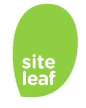

We make smart tools for productive people.
 DropmarkDead simple collaborationin the cloud. |
SymbolsetSymbolsets are semanticsymbol fonts. |

SiteleafA lightweight way to createand manage websites. |
We work with companies like
Apple, NASDAQ, OkCupid, and UNICEF.
WORK WITH US
|
BLOG Seconds Since Tupac Introducing Seconds Since Tupac (Tupac Time), now available on GitHub. Tupac Time (not to be confused with Epoch Time or Unix Time) is a system for describing instants in time, defined as the number of seconds that have elapsed since... |
Tweets about "@twitterdev" |